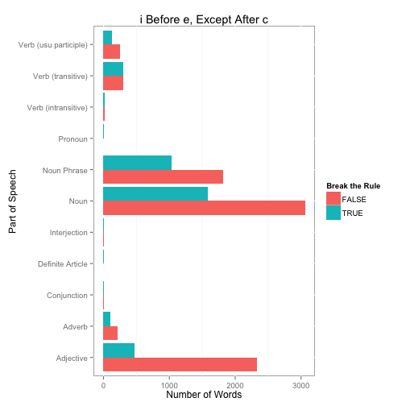
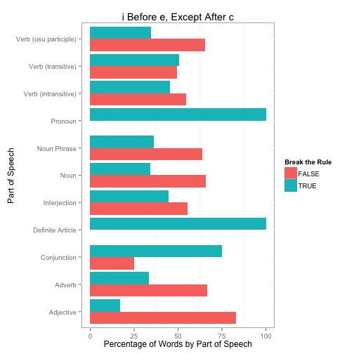

i Before e Except After c
When I went to school we were always taught the “i before e, except after c” rule for spelling. But how accurate is this rule? Kevin Marks tweeted today the following:
»@uberfacts: There are 923 words in the English language that break the “I before E” rule. Only 44 words actually follow that rule.« Science
— Kevin Marks (@kevinmarks) March 25, 2013
Not sure where he came up with that result, but seems simple enough to verify. First, download a English language word list compiled by Kevin Atkinson and available at SourceForge (I will use the Parts of Speech Database, or download my version from Github). I also create a data frame (from the README file) partsOfSpeech that maps the codes to descriptions that we will use later.
require(ggplot2)
require(reshape)
partsOfSpeech <- as.data.frame(matrix(c(
'N','Noun',
'P','Plural',
'h','Noun Phrase',
'V','Verb (usu participle)',
't','Verb (transitive)',
'i','Verb (intransitive)',
'A','Adjective',
'v','Adverb',
'C','Conjunction',
'P','Preposition',
'!','Interjection',
'r','Pronoun',
'D','Definite Article',
'I','Indefinite Article',
'o','Nominative'), ncol=2, byrow=TRUE), stringsAsFactors=FALSE)
names(partsOfSpeech) <- c('Code','Description')
words <- read.table('part-of-speech.txt', sep='\t', header=FALSE, quote='',
col.names=c('Word','POS'), stringsAsFactors=FALSE)
nrow(words)
## [1] 295172The parts-of-speech is coded such that the letters before | character come from the original Moby database and letters after the | character come from WordNet. The first character corresponds to the primary classification. The following R code will split this field into two new variables, Moby and WordNet, and then strip the first character from WordNet to create a WordNetPrimary variable. We will use this classification later for plotting purposes.
tmp <- lapply(words$POS, FUN=function(x) {
x <- unlist(strsplit(x, '|', fixed=TRUE) )
if(length(x) == 1) return(c(NA, x[[1]]))
else if(x[[1]] == '') return(c(NA, x[[2]]))
else return(c(x[[1]], x[[2]]))
})
words$Moby <- sapply(tmp, function(x) x[1])
words$WordNet <- sapply(tmp, function(x) x[2])
words$WordNetPrimary <- substr(words$WordNet, 1, 1)
table(words$WordNetPrimary, useNA='ifany')
##
## ! A C D h i N p P r
## 260 51914 54 60 71566 2239 119441 8506 99 85
## t v V <NA>
## 12399 13730 12124 2695We use the grep function to get three vectors representing all the “ie”, “ei”, and “cei” words. We also print the number of each type word and the percentage of all words this represents.
ie <- grep('ie', words$Word)
ei <- grep('ei', words$Word)
cei <- grep('cei', words$Word)
cie <- grep('cie', words$Word)
length(ie); length(ie) / nrow(words) * 100
## [1] 10647
## [1] 3.607
length(ei); length(ei) / nrow(words) * 100
## [1] 3542
## [1] 1.2
length(cei); length(cei) / nrow(words) * 100
## [1] 202
## [1] 0.06843
length(cie); length(cie) / nrow(words) * 100
## [1] 654
## [1] 0.2216Number of words that follow the rule, “i before e except after c”
length(ie) + length(cei) - length(cie)
## [1] 10195Number of i after e words that are not after c (first way to break the rule).
length(ei[!(ei %in% cei)])
## [1] 3340Number of i before e words that are after c (the other way to break the rule).
length(cie)
## [1] 654Percentage of words that break the rule.
(length(ei[!(ei %in% cei)]) + length(cie)) / sum(length(ie), length(ei)) * 100
## [1] 28.15So of the 14,189 “ie” and “ei” words, 3,994 break the “i before e, except after c” rule, or about 28.1%.
Let’s see how this breaks out by part-of-speech.
thewords <- words[c(ie,ei),]
thewords$BreakRule <- TRUE
thewords[which(row.names(thewords) %in% c(cei, ie[!(ie %in% cie)])),]$BreakRule <- FALSE
#Counts
tab <- as.data.frame(table(thewords$WordNetPrimary, thewords$BreakRule, useNA='ifany'))
tab <- merge(tab, partsOfSpeech, by.x='Var1', by.y='Code', all.x=TRUE)
ggplot(tab, aes(x=Description, y=Freq, fill=Var2)) +
geom_bar(stat='identity', position='dodge') +
ylab('Number of Words') + xlab('Part of Speech') +
scale_fill_hue('Break the Rule') +
ggtitle('i Before e, Except After c') + coord_flip()
#Percentages
tab2 <- as.data.frame(prop.table(table(thewords$WordNetPrimary,
thewords$BreakRule, useNA='ifany'), 1) * 100)
tab2 <- merge(tab2, partsOfSpeech, by.x='Var1', by.y='Code', all.x=TRUE)
ggplot(tab2, aes(x=Description, y=Freq, fill=Var2)) +
geom_bar(stat='identity', position='dodge') +
ylab('Percentage of Words by Part of Speech') + xlab('Part of Speech') +
scale_fill_hue('Break the Rule') +
ggtitle('i Before e, Except After c') + coord_flip()
A few last details. Here is the proportional table of words that break the rule by part-of-speech. Lastly, the definite article and pronoun words (three of each) that all break the rule.
cast(tab2, Description ~ Var2, mean, value='Freq')
## Description FALSE TRUE
## 1 Adjective 83.17 16.83
## 2 Adverb 66.56 33.44
## 3 Conjunction 25.00 75.00
## 4 Definite Article 0.00 100.00
## 5 Interjection 55.56 44.44
## 6 Noun 65.84 34.16
## 7 Noun Phrase 63.70 36.30
## 8 Pronoun 0.00 100.00
## 9 Verb (intransitive) 54.55 45.45
## 10 Verb (transitive) 49.42 50.58
## 11 Verb (usu participle) 65.45 34.55
## 12 <NA> 67.26 32.74
thewords[which(thewords$WordNetPrimary == 'D'), ]
## Word POS Moby WordNet WordNetPrimary BreakRule
## 113927 either DCv <NA> DCv D TRUE
## 182679 neither DCv <NA> DCv D TRUE
## 262111 their D <NA> D D TRUE
thewords[which(thewords$WordNetPrimary == 'r'), ]
## Word POS Moby WordNet WordNetPrimary BreakRule
## 262112 theirs r <NA> r r TRUE
## 262113 theirself r <NA> r r TRUE
## 262114 theirselves rp <NA> rp r TRUEPart II - Using only the 5,000 Most Frequently Used Words
Here is an update using the list of 5,000 most commonly used words from http://www.wordfrequency.info/top5000.asp (note there really are only 4,354 unique words since the same word can be used in different parts-of-speech). Of the 4,354 unique words, 96, or about 2.2%, have an “ie” or “ei” in the word. Of those 96 words, 31, or 32.3% break the “i before e except after c” rule.
words <- read.csv('MostUsedWords.csv')
dups <- words[words$Word %in% words[duplicated(words$Word),]$Word,]
head(dups[order(dups$Word),])
## Rank Word Part.of.speech Frequency Dispersion
## 47 46 about i 874406 0.96
## 180 179 about r 208550 0.97
## 897 896 above i 44130 0.95
## 1604 1599 above r 23866 0.92
## 1553 1548 abuse n 24534 0.93
## 3783 3778 abuse v 7554 0.94
length(unique(words$Word))
## [1] 4354
words <- words[!duplicated(words$Word),]
ie <- grep('ie', words$Word)
ei <- grep('ei', words$Word)
cei <- grep('cei', words$Word)
cie <- grep('cie', words$Word)
#Percentage of words that break the rule.
(length(ei[!(ei %in% cei)]) + length(cie)) / sum(length(ie), length(ei)) * 100
## [1] 32.29Part III - Weighted by Frequency of Words
Using the same list as part II above, let’s consider the word frequency. That is, we’ll weight each word by it’s frequency according to WordFrequency.info. Using this approach, 47% of “ie” words break the rule. Put another way, for each “ie” word you encounter reading, there is a 47% chance it does not follow the “i before e, except after c” rule.
words <- read.csv('MostUsedWords.csv')
ie <- grep('ie', words$Word)
ei <- grep('ei', words$Word)
cei <- grep('cei', words$Word)
cie <- grep('cie', words$Word)
(sum(words[ei[!(ei %in% cei)],'Frequency']) + sum(words[cie,'Frequency'])) /
sum(words[ie,'Frequency'], words[ei,'Frequency']) * 100
## [1] 46.81